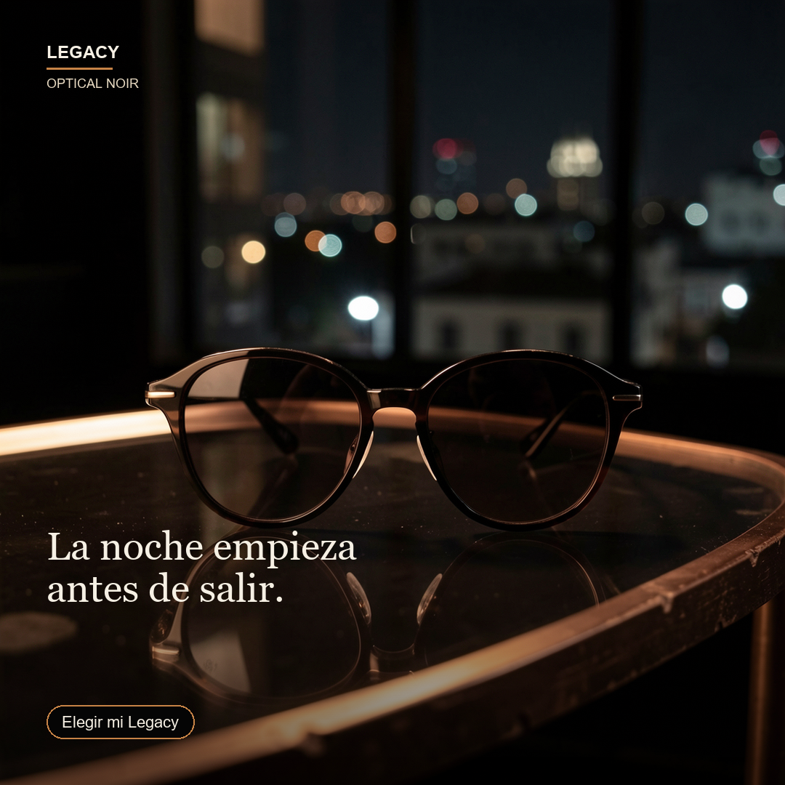
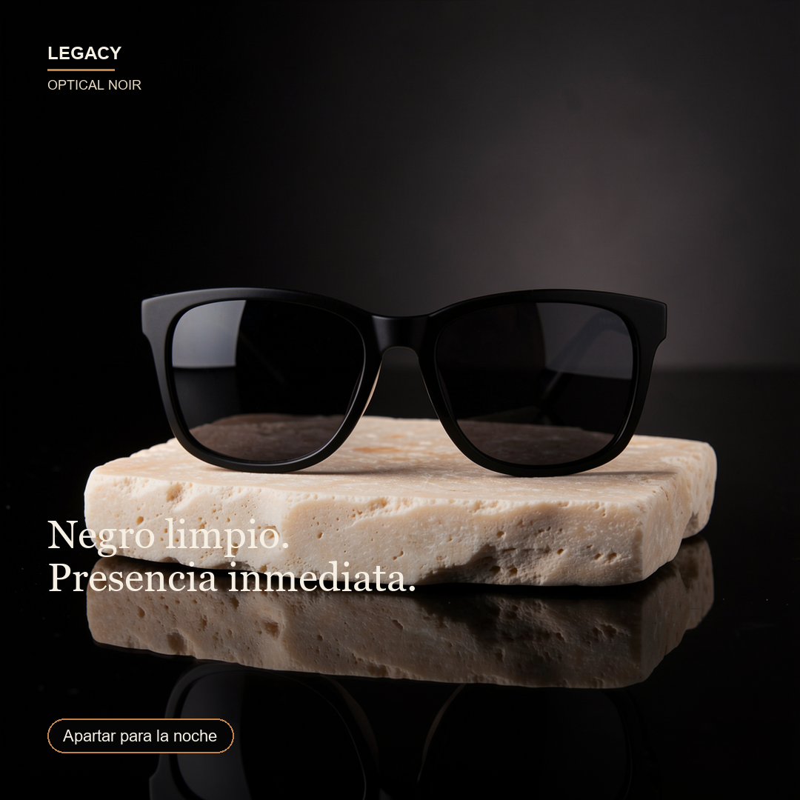
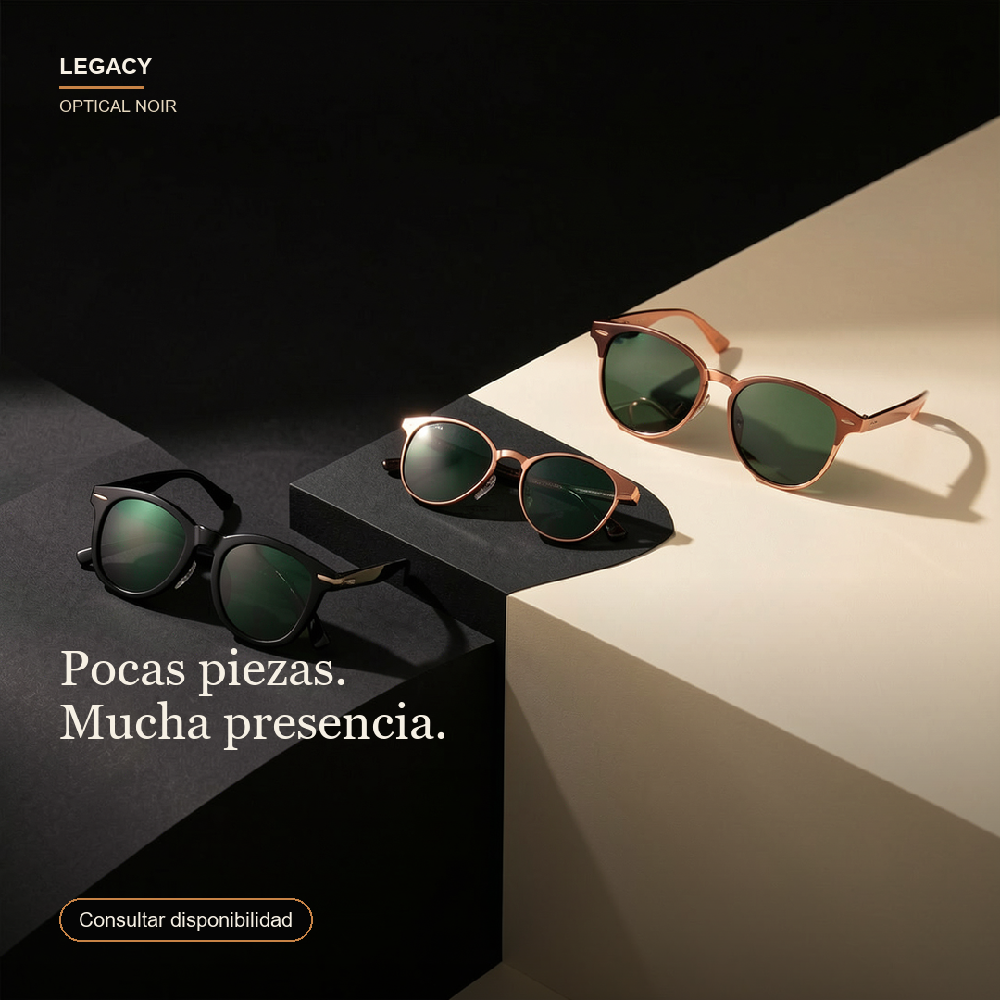
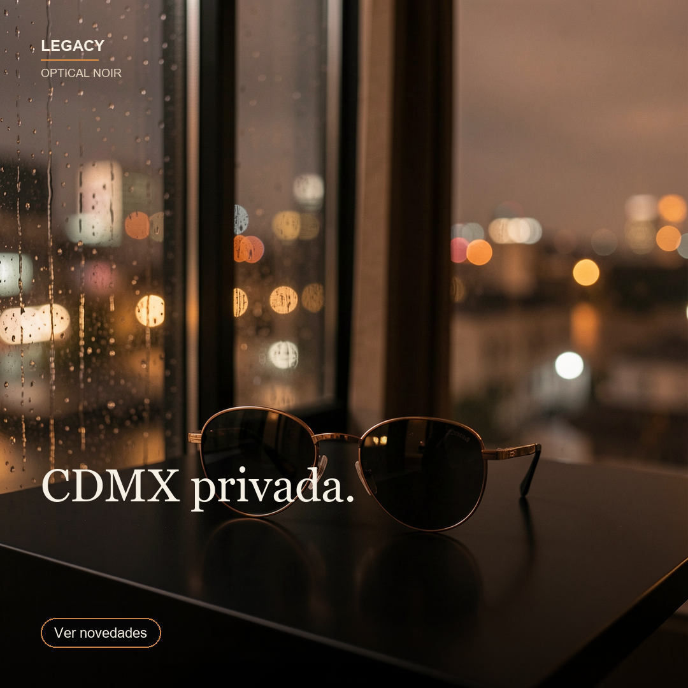
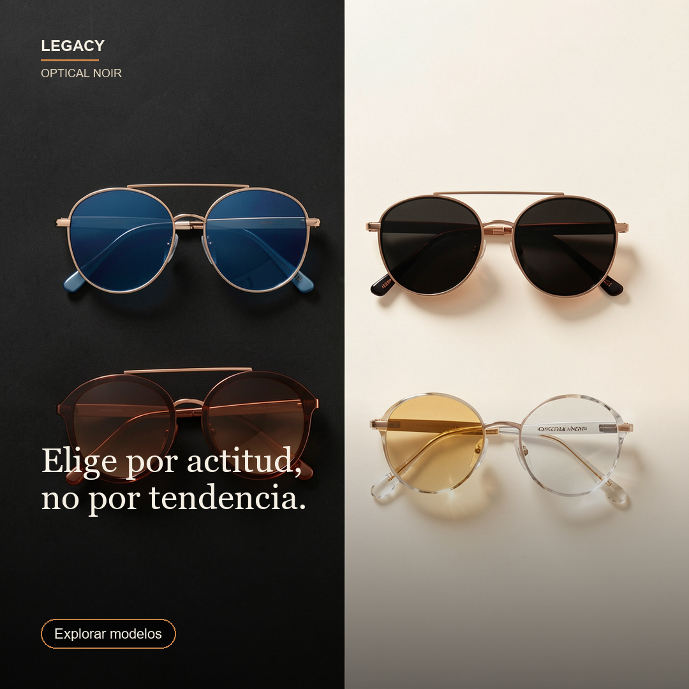
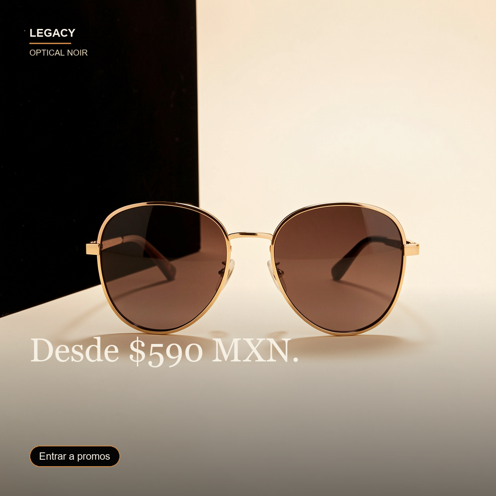

Account brief / context pack
Legacy es una marca de lentes de sol con una oportunidad clara: dejar de parecer catálogo y operar como una marca editorial con punto de vista. El territorio recomendado para esta primera salida es Optical Noir: una estética nocturna, sobria y premium que usa negro profundo, marfil cálido, cobre y reflejos de lente para convertir producto en presencia.
La audiencia principal está en CDMX y compra por actitud, regalo o salida; no solo por precio. El lenguaje debe ser español primero, breve y seguro. La venta debe sentirse como asesoría de estilo: elegir, apartar, consultar disponibilidad y explorar modelos.
Strategy brief
Objetivo: lanzar una secuencia social que presente a Legacy como una marca con mundo propio y convierta atención visual en conversación por DM/WhatsApp.
Tesis: Legacy no debe competir como tienda genérica. Debe apropiarse de un look reconocible —Optical Noir— y repetirlo de forma consistente: producto protagonista, sombra dramática, ciudad nocturna, líneas cortas y claims responsables.
Mensaje central: “La noche empieza antes de salir.”
La campaña abre con mundo/editorial, después aterriza producto, activa urgencia controlada, refuerza estética, ayuda a elegir y cierra con una entrada accesible desde $590 MXN.
Message house / brand-content pack
Voz: directa, visual, no ansiosa.
Sí decir: “Presencia inmediata”, “Consulta color y disponibilidad”, “El modelo correcto se nota antes de hablar”, “Entrar al universo Legacy no tiene que esperar”.
Evitar: hype, urgencia falsa, claims absolutos o frases de descuento agresivo.
Sistema de caption: una frase editorial de apertura, una línea de producto o beneficio, CTA conversacional y hashtags limitados. El copy debe sonar premium pero fácil de responder.
Channel plan
Canales de esta prueba: Instagram feed como lanzamiento visual, Instagram/Reels como pieza de movimiento posterior, WhatsApp/DM como canal conversacional y sitio/catalogo como fuente de producto/precio.
Cadencia sugerida: seis publicaciones en seis días. Día 1 brand launch, día 2 producto hero, día 3 pocas piezas, día 4 editorial archive, día 5 buyer guide, día 6 entrada promo.
Regla operativa: si no hay conector real o aprobación final, se presenta como draft listo para revisión, no como publicación ejecutada.
Creative asset map
Los assets fueron generados después de definir la estrategia para asegurar alineación con Optical Noir. La dirección visual usa fotografía editorial de producto, baja iluminación, fondos negros/marfil, cobre, reflejos sutiles y composición cuadrada para Instagram.
Cada pieza tiene un rol: apertura de mundo, hero product, sensación de pocas piezas, archivo CDMX, guía de elección y entrada accesible. Las imágenes evitan look de catálogo y dejan espacio para headline/CTA.
Publication-ready drafts/assets
Se incluyen seis drafts cuadrados listos para revisión de feed. Cada uno tiene imagen nueva generada por IA, headline, CTA y caption sugerido. La publicación real queda sujeta a aprobación y confirmación de disponibilidad.
No se incluyen CRM, medición, QA, receipts ni performance report porque esta corrida pidió únicamente el primer paquete de entregables.
Drafts visuales






Mapa de publicación y captions
| ID | Rol | Asset | Draft copy |
|---|---|---|---|
| 01 | Brand launch / editorial | La noche empieza / antes de salir. La noche empieza antes de salir. Legacy reúne siluetas importadas, presencia medida y entrega directa en CDMX. Explora modelos desde $590 MXN. CTA: Elegir mi Legacy #LegacyCDMX #OpticalNoir #LentesDeSol | |
| 02 | MONROE / BLACK hero | Negro limpio. / Presencia inmediata. MONROE en negro: una silueta limpia para entrar sin explicar demasiado. Disponible en Legacy. CTA: Apartar para la noche #LegacyMonroe #LentesCDMX | |
| 03 | Limited-feel product set | Pocas piezas. / Mucha presencia. Las piezas con más carácter no se quedan esperando. Hendrix, Gaga y Winehouse están en pocas piezas. Consulta color y disponibilidad. CTA: Consultar disponibilidad #LegacyDrop #CDMXStyle | |
| 04 | CDMX editorial archive | CDMX privada. No es solo el modelo: es la forma de entrar. Legacy trabaja con una estética Optical Noir: negro, marfil, geometría y noche de CDMX. CTA: Ver novedades #OpticalNoir #LegacyCDMX | |
| 05 | Buyer guide | Elige por actitud, / no por tendencia. Guía rápida Legacy: azul para contraste, negro para presencia directa, oro para luz nocturna, crystal para precisión. El modelo correcto se nota antes de hablar. CTA: Explorar modelos #GuiaLegacy #SunglassesMX | |
| 06 | Accessible premium entry | Desde $590 MXN. Entrar al universo Legacy no tiene que esperar. Modelos seleccionados desde $590 MXN, con entrega coordinada desde CDMX. CTA: Entrar a promos #LegacyPromo #LentesImportados |